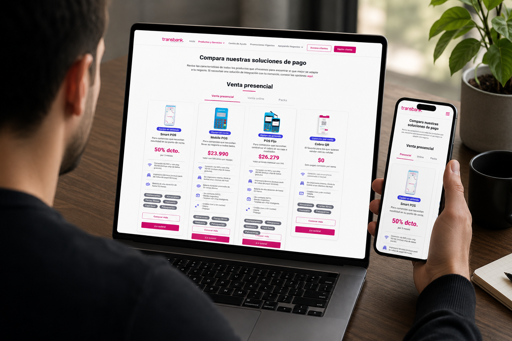

FinFlow — Redesigning the Future of Business Banking
A complete UX overhaul of a B2B fintech platform that increased user activation by 47% and reduced onboarding drop-off by 62%.
Explore Case Study
The Challenge
Transbank's growing portfolio of payment solutions made it difficult for businesses to evaluate and compare options. The existing comparator was information-heavy, hard to navigate and focused on technical specs rather than helping businesses make confident decisions.
The redesign needed to simplify the comparison experience, improve discoverability, and reduce the friction that was preventing businesses from selecting the right payment solution.
Goals
User Goals
- Evaluate payment options with less effort
- Compare products without switching pages
- Find the right solution faster
- Feel confident before choosing
Business Goals
- Improve product discoverability
- Reduce decision-making friction
- Increase conversion on payment solutions
- Build a scalable comparison framework
Process
Discovery
Customer interviews, behavioral analytics and competitive benchmarking to understand how businesses evaluated payment solutions and where friction appeared in the decision process.
Research & Analysis
Usability testing of the existing comparator, Hotjar analysis and analytics review to identify specific drop-off points, discoverability issues and decision-making barriers.
Design Iterations
Three design rounds — from a technical comparison table to a decision-focused experience — each validated against research findings and business feedback.
Validation
Usability testing of the final redesign against the existing comparator, measuring improvements in task completion, cognitive load and confidence before selection.
Results
Key Learnings
Simplifying the comparison experience proved more effective than adding more information. The most impactful improvements came from restructuring how content was presented — prioritizing what users needed to make a decision over what the product team assumed they should know.